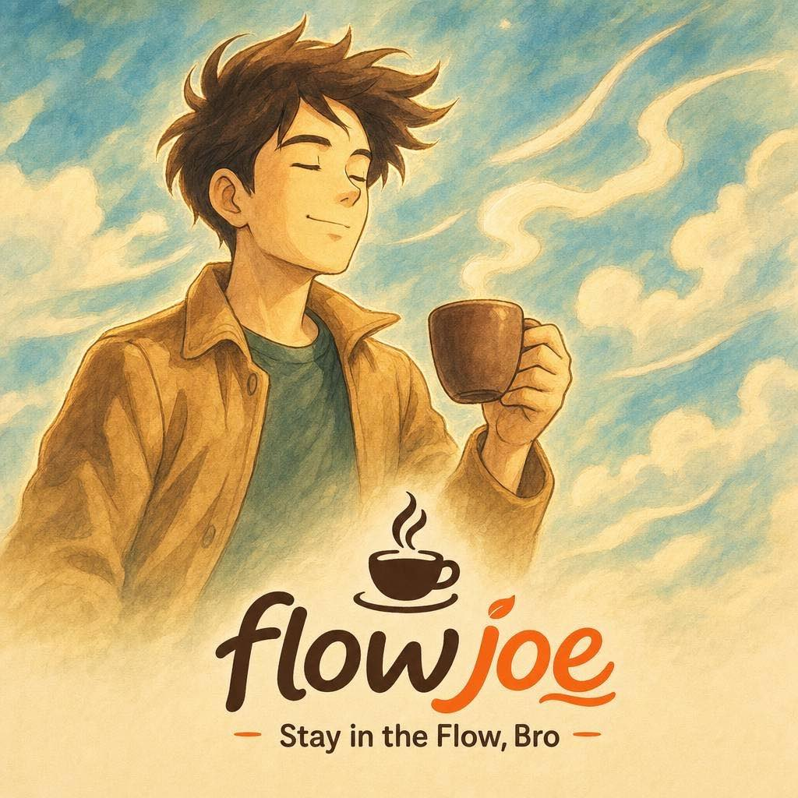
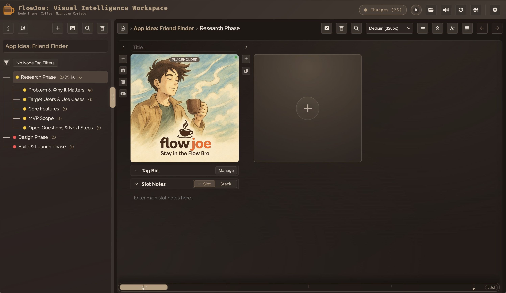

FlowJoe is a visual workspace for makers, managers, and creatives to capture ideas, connect the pieces, and keep projects moving without losing the thread.
Local-first. Works offline. Your data (and ideas) stay yours.

Notes, links, files, images, audio, and more. Jot it down and don't lose it.
Visually link concepts and see the big picture emerge.
Tasks, checklists, and status that keep you organized, without boxing you in.
Get insights and suggestions with full context, never starting from scratch.
Local-first by design. Your data stays yours, and never hits our servers.

Most productivity tools start after a clear plan exists. FlowJoe helps you get there.
Then move into execution with confidence.
Somewhere in this pile is the project.
The ideas. The decisions. The breakthroughs. The references you'll need later.
The problem isn't that you have too much information.
The problem is that the context keeps getting lost, and the best ideas are buried.
Your project deserves better than twenty-seven tabs and endless folders.
Projects naturally branch.
The tree keeps the story connected.
Like leaves on a tree, a single node can contain:
And FlowJoe remembers the relationships between each one.
This is the place where the full context of an idea gives shape to the whole.
Open the project. See exactly where things stand. Keep moving.
Pick up exactly where you left off, without skipping a beat.
Plan features, track tasks, and keep all your product ideas organized and alive.
Learn more →Hone your ideas, from brainstorming to building, increasing overall planning efficiency.
Learn more →Gather inspiration, organize assets, and track progress across every stage.
Learn more →Because your project already contains:
FlowJoe's AI can help without making you explain everything from scratch.
Less prompting. More progress.
Local-first. Fast. Private. Built to stay with you long term.
Your work remains yours.
Three weeks from now. Maybe three months from now. You open the project again. And somehow... you still know exactly what was going on.
No archaeological dig required.
“Everything I need is connected, so I can focus on creating instead of searching.”
— Maya, Writer
FlowJoe helps you capture ideas, preserve context, and maintain momentum.
Why not start with the project currently spread across:
Or at the very least, give “final_final_v2_REAL” a home.
Take FlowJoe for a Spin